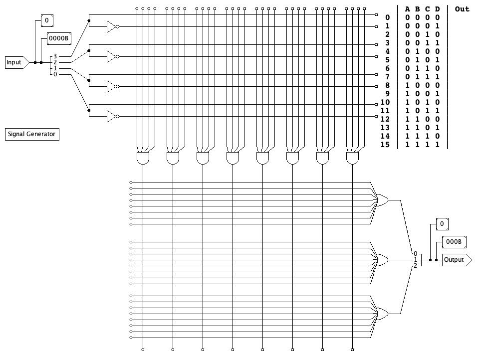
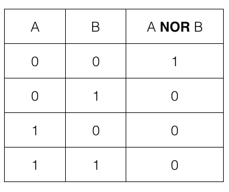
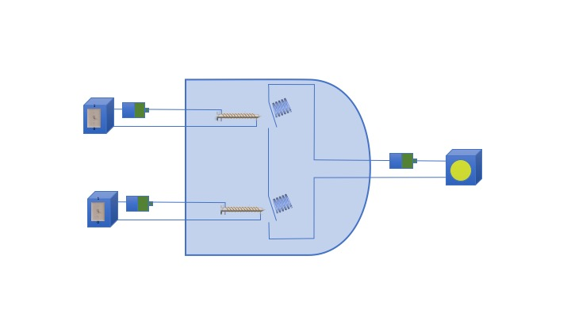
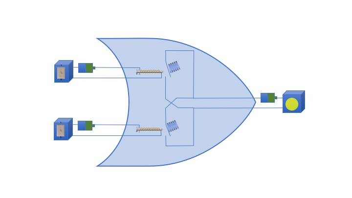

- The video shows how to make a circuit that detects multiples of 3.
Follow a similar procedure to build a circuit that detects multiples of 5.
(Fill out the truth table, then complete the circuit diagram.)

- Picture a typical 7-line LED display (e.g., one digit of a
typical digital alarm clock --- see the diagram below). You are
going to design a combinatorial circuit that controls whether
the top-left LED is
lit (LED z_2 to be precise). LED z_2 is
lit for numbers 0, 4, 5, 6, 8, and 9; and blank for all
other inputs --- including invalid inputs.

- Write the truth table for this circuit. (The circuit is
for LED z_2 only. Do not include columns for
other LEDs.)
- Draw the logic diagram for this combinatorial circuit in a "PLA-style".
- Video 2 showed how to build AND and OR gates using relays. A NOR gate has the truth table shown below.
Design a single relay using the pattern in the video that implements a NOR gate.



Updated Wednesday, 1 September 2021, 9:12 AM